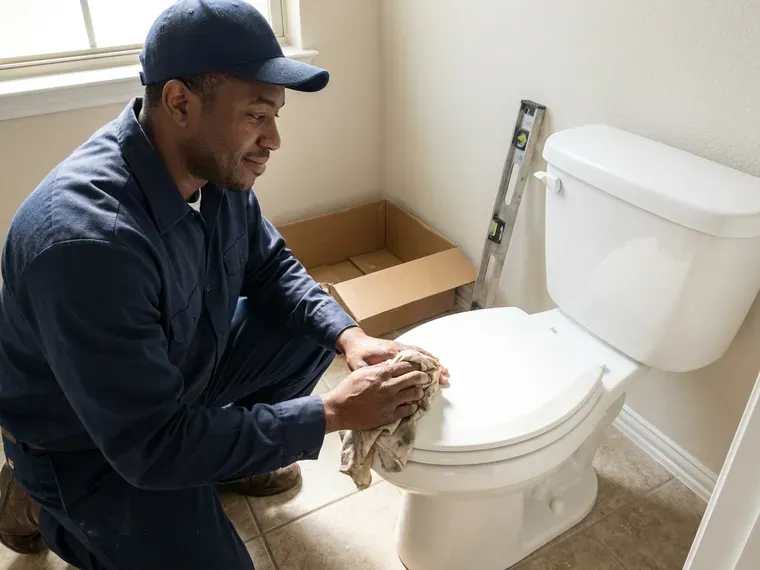

Sewer Line Inspection in Concord, NH
Roots, cracks, bellies and offsets all show up on our camera in Concord, NH. We record it and explain each one.
- Licensed Plumbers
- Written Summary Included
- Pre-Purchase Reports
- Fast Scheduling

Scope the Sewer Before Closing in Concord, NH
You get the inspection price on the phone, with no surprise add-ons.
Sewer Line Inspection in Concord, NH With HD Video and Clear Reports
FVR Plumbing gives Concord, NH homeowners a clear look at the pipe they cannot see. Roots are the usual find. Tree roots, shifting soil and old pipe all leave marks on the camera, and we explain each one before you decide on any repair.
Work we handle every week:
- Video reports for real estate sales
- Spotting cracks and root intrusion
- Sonde depth and position marking

Additional Plumbing Maintenance Services in Concord, NH
Our maintenance and specialty plumbing services in Concord, NH protect your home year-round and extend the life of every system.



Customers
Why Choose FVR Plumbing for Sewer Line Inspection in Concord, NH?
Plenty of homes around Concord still have original clay or cast iron sewer lines, which are often half a century old. Old lines fail without warning. We show you how much life is left so you can plan instead of reacting to a backup.
- Clear Diagnosis, You get a clear look inside the pipe on HD video, so the diagnosis is solid.
- Plain Talk, We explain the footage in plain words, with sensible next steps.
- Early Warnings, Early roots and hairline cracks show up on video, before they cause a backup.
Citywide Coverage
No matter where you live in Concord, the same gear comes to your door: HD push camera, sonde receiver, marking paint and a cable machine. Long runs are no problem. Our cameras reach well past 100 feet, out to the public sewer main.
Experienced Team
Our technicians train on current sewer camera equipment and know the defects common in New Hampshire sewer lines, from soil-related cracks to root masses at joints. They read video well. They can tell scale from a real break.
Safety-First Approach
Sewer work means contact with waste, so our techs wear gloves and protect the work area. Cleanup is part of the job. Every repair we recommend follows the plumbing code in Concord, NH and gets inspected by the building department whenever the city requires it.
Trusted Certified Concord Plumbing Services Professionals
At FVR Plumbing, we are proud to offer certified plumbing services throughout Concord, NH. Credentials matter in this trade. Every repair, install and maintenance visit follows strict safety and quality rules, and the plumbers doing the work carry recognized industry credentials.
Call Us Now PHCC Plumbing Contractor Recognition
PHCC Plumbing Contractor Recognition Better Business Bureau (BBB) Accreditation
Better Business Bureau (BBB) Accreditation Angi Certified Pro
Angi Certified Pro ISO 9001 Quality Management Certification
ISO 9001 Quality Management CertificationSewer Line Inspection Services in Concord, NH
Finding Pipe Damage and Corrosion in Concord, NH
Cracks, breaks, corrosion and sagging sections are easy to see on the video. Soil movement causes many of them. We judge how bad each defect is and exactly where it sits, so the choice between spot repair, lining and replacement rests on what the pipe really looks like, not a guess.

Post-Repair Sewer Verification in Concord
We camera the line after every repair. FVR Plumbing scopes the line after a repair or cleaning, confirming tight joints, proper slope and no leftover debris. The footage is yours. It also gives you a baseline to compare against if a drain ever slows down again.
Sewer Line Locating and Depth Marking in Concord, NH
Every repair starts with knowing where the line goes. Depth matters too. Our camera carries a sonde transmitter that we trace from above ground with a receiver, marking the line and each problem spot with paint or flags so excavation or trenchless work starts in the right place.
Sewer Inspection Price Ranges in Concord, NH
A residential sewer camera inspection usually costs $150 to $400. Clearing first or roof access adds cost. Compared with sewer repairs that can run $3,000 to $15,000 or more, a scope is cheap insurance against buying a house with a broken line. The math is easy.
Locating Lost Items and Mapping Lines in Concord, NH
Dropped a ring down the drain? The camera can often find it. We also use the sonde in the camera head to trace the full route of your sewer line, which helps older homes where the original plans are long gone in Concord, and gives you a map before any landscaping, fence or addition goes in.
Home Buyer Sewer Inspection in Concord
Real estate timelines move fast. We schedule pre-purchase inspections quickly, and the scope shows roots, cracks, bellies or other problems in time to negotiate with the seller before your inspection period ends. You get a video and a written report that fits most real estate timelines.
Preventive Sewer Inspections in Concord, NH
A scheduled scope beats an emergency call. Homes in Concord, NH with older pipe or big trees near the line benefit most from a camera inspection every year or two, because early roots, hairline cracks and scale buildup are cheap to deal with when they are small. Short visit, big savings.

Inspections for Commercial Lines in Concord
Commercial lines handle heavier use. FVR Plumbing inspects larger-diameter pipe and longer runs in Concord, from restaurants to office buildings, recording the grease, roots and defects that could shut you down. Reports go to owners and managers.
Sewer Camera Inspection Near You in Concord, NH
Our techs scope lines all over Concord, NH, and can tell which areas still run clay pipe and which have newer PVC. Knowing that makes the video easier to interpret.
Need a sewer scope near you? FVR Plumbing loads the truck with a camera, a locator and clearing gear, so a blocked line does not stop the inspection. One visit usually does it in Concord.
FVR Plumbing at a Glance
- Licensed and insured plumbers serving Concord, NH
- 24/7 emergency service with same-day scheduling
- Upfront, flat-rate pricing before work begins
- 4.9-star rated by 840+ New Hampshire customers
Concord Map
Concord Information
- Population
- 44,629
- Area codes
- Local
- Service area
- Concord and communities within 40 miles
- Nearby
- Manchester, Laconia, Derry, Londonderry
Mature trees send roots toward sewer joints, while moving soil pulls the joints apart, which is why camera inspections matter in Concord, NH.
Talk to a Plumber
Call FVR Plumbing for honest, reliable plumbing from people who know the trade in Concord, NH.
Our Specialized Plumbing Services in Concord, NH
At FVR Plumbing, we handle the full list of plumbing services across Concord, NH. From leak detection to full system installs, our team works fast and charges fair prices on homes and commercial properties alike. Explore our core services below:


How a Sewer Camera Inspection Works in Concord, NH
Record, mark, then review it together.
Book the Inspection
Call (844) 442-1569 and tell us what is going on. We set a time and quote the inspection price.
Camera In
Our tech feeds an HD camera through a cleanout, and you can watch the live feed on the monitor.
Find and Mark
We record every defect and mark its depth and location with the sonde receiver.
Frequently Asked Questions About Sewer Line Inspection in Concord
Most sewer camera inspections in Concord, NH run $200 to $500, depending on the length of the line and how easy it is to get into. A blocked line costs more. Any jetting needed before the scope is priced separately and approved by you first.
Older pipe or trees near the line justify an inspection every couple of years. Repeat backups need one right away. Commercial properties often schedule yearly inspections to stay ahead of grease buildup and root growth.
Roots, cracks, breaks, bellies, offsets, grease, scale and foreign objects like toys or wipes balled up at a joint. It also shows the pipe material. Every defect gets marked above ground for a precise repair.
Most take about an hour. Blocked lines take longer. If the line must be cleared first or runs long, plan on two to three hours, with video delivered the same day.
Barely at all. Our technicians use an existing cleanout, which is a capped pipe usually found outside near the foundation or in a basement or garage. There is typically no digging and no water shutoff for more than a few minutes.
Repairs we perform, including spot repairs, lining and replacement, carry a written workmanship warranty. Materials carry manufacturer coverage.
Figure on one to two hours for most homes. Hard access takes longer. Long lines, multiple branches or a cleanout buried under landscaping can stretch the visit, but we never rush the camera run.
It catches most of them, including blockages, cracks, corrosion, root intrusion, offsets and bellies. A belly full of water hides a little. In that case we jet the line and scope it again for a clear view.
What Our Customers Say About Our Plumbing Experts

Lisa C.
Water was pouring out from under the washing machine on a holiday weekend. FVR Plumbing talked me through closing the valves over the phone and had a plumber at the house within ninety minutes. It was a burst fill hose.
Emergency Plumbing · Rochester, NHRachel N.
Hard water was leaving white crust on every faucet and our dishwasher was struggling. The tech tested the water, recommended a softener sized for a family of five, and installed it with a bypass valve in one afternoon. The spots on our glasses are gone.
Water Softener · Laconia, NH
Paul B.
Our pit pump ran nonstop even in dry weather. The plumber found the check valve was stuck open, so the same water kept cycling back into the pit. New valve, new float switch, done in an hour. It runs quiet now.
Sump Pump · Concord, NHGreg S.
I manage a small strip center with six tenants. FVR Plumbing handles our annual backflow testing and fixed a recurring clog in the shared sewer line that had been backing into the nail salon. Their reports come in clean and on time.
Commercial Plumbing · Concord, NH
Kevin O.
Before buying our house I paid for a sewer camera inspection. FVR Plumbing found a belly in the line that held standing water about forty feet from the cleanout. We used the video to get the sellers to fix it before closing.
Sewer Camera Inspection · Londonderry, NHBrian W.
I smelled gas behind the dryer and called right away. The plumber found a corroded flex connector, replaced it, and pressure tested the whole line before turning the gas back on. He let me watch the gauge hold steady for fifteen minutes.
Gas Line Repair · Rochester, NH